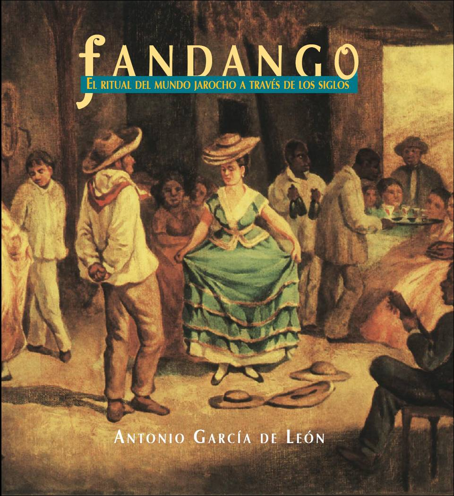
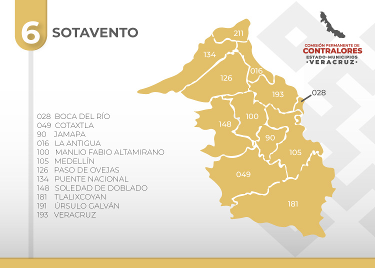
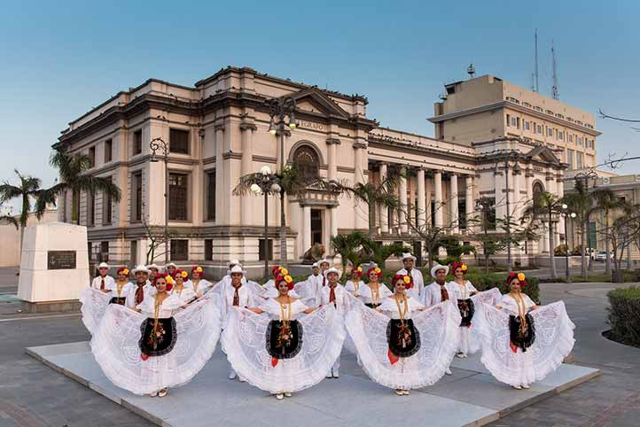
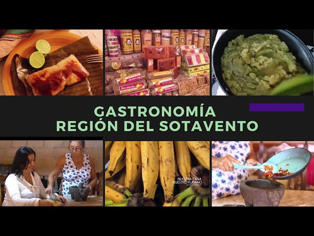
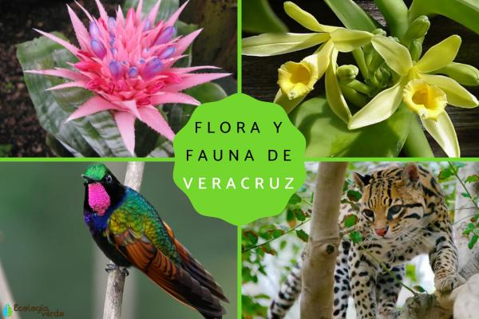

Historia y raíces culturales
La región del Sotavento, ubicada en el centro-sur del estado de Veracruz, es un territorio de profunda confluencia cultural. Desde antes de la llegada de los españoles, fue habitada por pueblos nahuas y popolucas. Con la colonización, la llegada forzada de personas africanas —muchas de ellas traídas como esclavizadas para trabajar en ingenios azucareros y puertos— imprimió una huella indeleble en su identidad.
Esta mezcla afroindígena, enriquecida con elementos ibéricos, dio origen a la cultura jarocha, cuyo nombre deriva del vocablo náhuatl xalapan o del término colonial “jarocho” (originalmente despectivo, hoy reivindicado con orgullo). El Sotavento fue, y sigue siendo, un espacio de resistencia cultural, donde la música, la oralidad y las prácticas comunitarias han preservado memorias colectivas frente a la homogenización.
Ubicación geográfica
El Sotavento comprende municipios como Tlacotalpan, Alvarado, Cosamaloapan, Ángel R. Cabada, Ignacio de la Llave, Otatitlán y parte de Catemaco y Tlacojalpan.
Limita al norte con la región del Papaloapan, al sur con Los Tuxtlas, al este con el Golfo de México y al oeste con la Sierra de Zongolica. Su relieve es predominantemente plano, con extensas llanuras aluviales, ríos caudalosos —especialmente el Papaloapan, el segundo más grande de México— y humedales de importancia ecológica internacional.
Expresiones culturales
El alma del Sotavento se expresa en el son jarocho, un género musical que fusiona ritmos africanos, melodías indígenas y armonías europeas. Se interpreta con instrumentos como la jarana (pequeña guitarra rítmica), el requinto jarocho (para improvisar versos) y el arpa veracruzana (de origen español, adaptada localmente).
El fandango es mucho más que una fiesta: es un ritual comunitario donde se canta, se baila, se comparte comida y se transmite conocimiento de generación en generación. En él, el zapateado no solo marca el ritmo, sino que dialoga con los instrumentos en un lenguaje corporal ancestral.
El traje jarocho —blusa bordada con motivos florales, falda de vuelo y rebozo para las mujeres; guayabera blanca, pantalón de manta y paliacate rojo para los hombres— simboliza elegancia, identidad y pertenencia.
Festividades y tradiciones
- Fiesta de la Candelaria (Tlacotalpan): Celebrada el 2 de febrero, incluye una procesión fluvial en honor a la Virgen de la Candelaria, música en vivo, danzas y altares florales. Declarada Patrimonio Cultural Inmaterial de la Humanidad por la UNESCO en 2011.
- Fandangos comunitarios: Se realizan en patios, plazas o centros culturales, especialmente en diciembre y en fechas patronales. Son espacios de libre participación y transmisión oral.
- Fiestas de San Juan y San Pedro (24 y 29 de junio): Celebradas en comunidades ribereñas con ofrendas al río, bailes y rituales de purificación.
- Día de Muertos: Con altares que incluyen pescado seco, frutas tropicales, café de olla y copitas de aguardiente.
Gastronomía típica
La cocina del Sotavento es una síntesis de sabores del mar, el río y la tierra, con técnicas heredadas de culturas indígenas y africanas:
- Arroz a la tumbada: guiso festivo con camarones, pulpo, calamar, jitomate, ajo y especias, cocido lentamente.
- Pescado a la veracruzana: preparado con salsa de jitomate, cebolla, aceitunas verdes, alcaparras y orégano.
- Mojarra frita o empanizada, acompañada de limón y salsa de chile serrano.
- Tamales rancheros (de masa con salsa y carne) y picadas jarochas (empanadas dulces de plátano macho frito).
- Bebidas: café de olla con piloncillo y canela, atole de maíz nuevo, y nieves artesanales de mango, tamarindo o coco.
Flora y fauna
El Sotavento alberga ecosistemas de gran valor ecológico: manglares, selvas bajas caducifolias, humedales y playas arenosas. Su flora incluye mangle rojo y blanco, ceiba, guanacaste, zapote, plátano, caña de azúcar silvestre y palma real.
En su fauna destacan aves como garzas, pelícanos, garcetas y patos silvestres; mamíferos como armadillo, jabalí de collar, mapache y ocelote; y reptiles como iguanas verdes y tortugas marinas (principalmente golfina y laud) que anidan en playas como las de Alvarado.
La región forma parte del complejo ecológico del Pantano de Centla y del Corredor Biológico Mesoamericano, lo que la convierte en un refugio clave para la biodiversidad del Golfo de México.
Datos destacados
- 📍 Tlacotalpan fue declarada Patrimonio Cultural de la Humanidad por la UNESCO en 1998 por su traza urbana colonial, arquitectura vernácula y tradición musical viva.
- 🎶 El son jarocho ha trascendido fronteras: existen fandangos en California, Nueva York, París y Berlín, impulsados por diásporas mexicanas y movimientos de justicia cultural.
- 🌊 El río Papaloapan (del náhuatl “río de mariposas”) es vital para la pesca artesanal, la agricultura y la identidad comunitaria. Su cuenca abarca más de 46,000 km².
- 🎭 El verso improvisado en el son jarocho —llamado “contrapunteo”— es una forma de poesía oral que aborda temas sociales, amorosos, políticos y espirituales.
- 📚 En 2023, el gobierno de Veracruz incluyó el son jarocho en el currículo escolar estatal como parte de la educación intercultural.